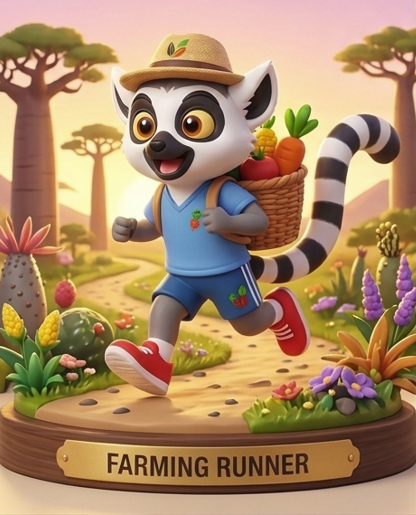

안녕하세요, 러닝농부입니다
2018년 당뇨 진단을 받은 뒤 오랫동안 약에만 기대 살아온 직장인입니다. 2026년 봄, 운동화 끈을 묶고 처음 1km를 달렸습니다.
6개월이 지나자 숫자가 달라지기 시작했습니다. 이곳에는 달리며 바뀐 몸과 마음, 그리고 첫 풀코스 마라톤까지의 과정을 기록합니다. 씨를 뿌린 농부가 물을 주고 기다리듯, 꾸준히 달리면 결실은 반드시 온다고 믿습니다.

FARMING RUNNER
@farmingrunner
씨 뿌린 농부처럼, 오늘도 한 걸음.
당뇨인 직장인의 달리기와 인생 2막 기록
2018년 당뇨 진단을 받은 뒤 오랫동안 약에만 기대 살아온 직장인입니다. 2026년 봄, 운동화 끈을 묶고 처음 1km를 달렸습니다.
6개월이 지나자 숫자가 달라지기 시작했습니다. 이곳에는 달리며 바뀐 몸과 마음, 그리고 첫 풀코스 마라톤까지의 과정을 기록합니다. 씨를 뿌린 농부가 물을 주고 기다리듯, 꾸준히 달리면 결실은 반드시 온다고 믿습니다.
당화혈색소
7%대 → 6.2%
러닝 시작
2026년 봄
첫 풀코스 도전
고베 마라톤
당뇨 진단부터 첫 풀코스까지, 누구나 따라 할 수 있는 달리기 이야기를 책으로 엮고 있습니다. 소식은 인스타그램과 유튜브에서 가장 먼저 전해 드릴게요.
출판, 협업, 강연 문의는 이메일로 보내 주세요.
farmingrunner@gmail.com